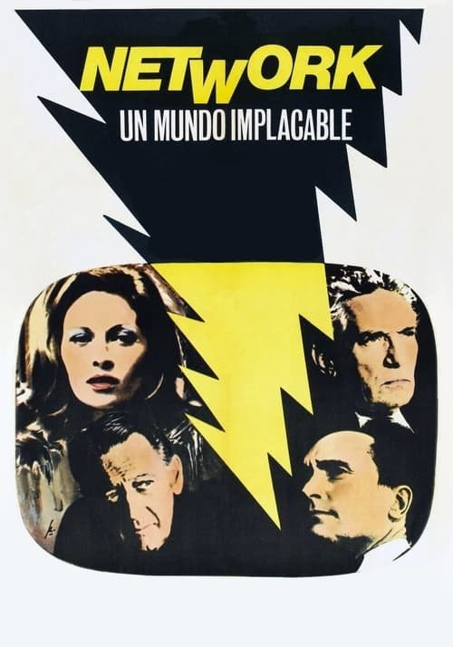

Network, un mundo implacable (1976)
Sinopsis Rápida
¿Qué pasaría si la locura se convirtiera en el mejor rating televisivo? Una explosiva sátira que predijo el futuro de los medios y la obsesión por el sensacionalismo.
Sinopsis Detallada
Network, un mundo implacable sigue la historia de Howard Beale, un presentador de noticias despedido que, en un arranque de locura en directo, anuncia su suicidio. Su inesperado arrebato se convierte en un fenómeno viral, impulsando los ratings del canal. La película es una mordaz crítica a la industria televisiva, explorando temas como la manipulación de la información, la búsqueda desesperada de audiencia y la banalización de la realidad. Con actuaciones memorables y un guion brillante, Network es una pieza de cine profética que sigue resonando en la actualidad.
¿Por qué tenés que verla?
- Una crítica feroz y profética sobre la manipulación mediática que sigue siendo relevante hoy en día.
- La inolvidable actuación de Peter Finch, ganadora del Oscar a Mejor Actor.
- Su impacto en la cultura popular y su influencia en la forma en que percibimos la televisión.
- Un guion brillante e inteligente que no deja títere con cabeza.
Idea Extra
Comparación de la sátira de Network con la realidad actual de los medios de comunicación y las redes sociales.